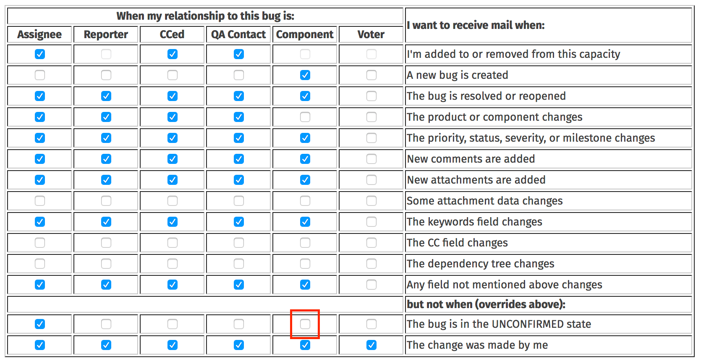
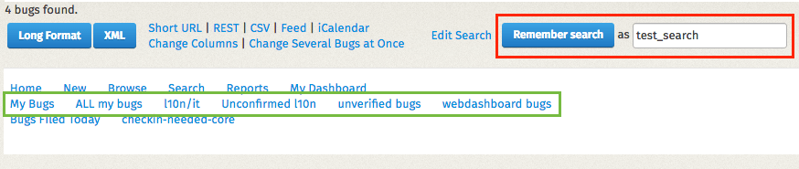

Bugzilla for localizers
Bugzilla is the system used to track issues for most of Mozilla’s projects. For this reason, every localizer should have an account on Bugzilla, and check incoming emails and notifications. Since bugs need to be read and understood by several people, including developers, English is the language commonly used in Bugzilla.
Bugs are filed in a Product, each product has multiple Components. For localization, there are two main products:
Mozilla Localizations: this product has several components, including one for each locale.www.mozilla.org: there is one specific component used for localization (L10N).
Bugzilla components are often referenced in the form of product :: component, e.g. Mozilla Localizations :: it / Italian or www.mozilla.org :: L10N. For some components, there is also a Locale field, that allows selecting one or more languages affected.

A bug has a status, the most common ones are:
- UNCONFIRMED: the bug was reported but it’s not confirmed yet. By default, a new user can only submit bugs as unconfirmed.
- NEW: the bug has been confirmed, but it still requires action.
- RESOLVED: the bug has been resolved.
When a bug is marked as RESOLVED, there is an additional information that describes the type of resolution:
- FIXED: the bug was fixed by a specific action.
- INVALID: the problem described is not a bug.
- WONTFIX: the problem described is a bug which will never be fixed.
- DUPLICATE: the problem is a duplicate of an existing bug.
- WORKSFORME: it wasn’t possible to reproduce the bug.
- INCOMPLETE: the bug doesn’t contain enough information to reproduce it, or a clear description of the issue.
When filing new bugs, the rule of thumb is:
- If the issue can be fixed by the localization team, e.g. it’s about a typo or mistranslation, it should be filed in
Mozilla Localizations :: Languageorwww.mozilla.org :: L10N. - If the issue needs work from a developer, e.g. a window is too narrow or a string is hardcoded, it’s a product bug, and should be filed accordingly. In case of doubt on which product or component to pick,
Firefox :: Untriagedis usually a good starting point for Firefox bugs. If you’re reporting a bug for a specific string, you should trace back that string to a bug, and file your report in the same product and component.
More information about Bugzilla are available in this guide. If you want to experiment with Bugzilla, you can use this test installation.
Triage localization bugs
Each localization team should keep an eye on bugs filed for their languages. There are several ways to do it, the simplest one is to use the existing dashboards: both the webdashboard and the Team page have Bugzilla sections showing open bugs filed against each locale.
Follow the Bugzilla component for your locale
The simplest way to keep your bugs under control is to follow your locale in Mozilla Localizations:
- Open your account preferences on Bugzilla.
- Select Component Watching in the left sidebar.
- In the right section, select Mozilla Localizations as product, then your locale in the Component list.
- Click Add.

The product will appear in the section You are currently watching: right below. From this moment, you will receive an email for all bugs filed in – or moved to – that component.
There are a few limitations to this approach:
- It’s not possible to follow a single locale within a component, for example for
www.mozilla.org :: L10N. - By default, bugs marked as UNCONFIRMED won’t send any notification. In order to receive emails for unconfirmed bugs, you need to update the Email Preferences in your profile, removing the flag from the Component column in the line
The bug is in the UNCONFIRMED state.

Saved searches
In Bugzilla, it’s possible to perform searches, and save them as templates. For example, let’s create a search for bugs reported against Italian in www.mozilla.org :: L10N.
Start from the Advanced Search page:
- Leave the search field empty.
- Select
www.mozilla.orgas Product. - Select
L10Nas Component. - Expand the Custom Search section at the bottom, and set it to Locale + contains the string + it.

When the results appear, you can use the Remember search button and input field to save this search. The list of your searches will be displayed at the bottom of each Bugzilla page: you simply need to click the link to perform the same search.

Note that you can select multiple products and multiple statuses (including UNCONFIRMED) to refine or expand the search criteria.
Confirm and close bugs
As already explained, each locale should address the bugs reported for their language in a timely manner. Bugs filed as UNCONFIRMED should be triaged, marked as NEW if they’re actual bugs or closed, and marked as fixed once the problem is solved.
By default, users can’t confirm or close bugs filed by other users. In order to do that, you need a permission called editbugs, which is normally assigned to localizers only after they demonstrated a clear understanding of how Bugzilla works and its etiquette. The reason for this is that this permission is assigned across the entire Bugzilla, not on single products or components. If you need to upgrade your permissions, get in touch with l10n-drivers.